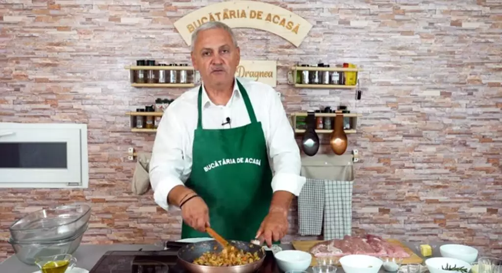

Terci de Fasole Galbena

- Fasole galbena terci - 450g
- Rosii in bulion -350g
- O ceapa alba medie
- Un morcov
- 1/2 ardei gras
- 1/2 ardei kapia
- 3-4 castraveciori acri mici
- 1-2 catei de usturoi
- O legatura de marar
- O legatura de patrunjel
- Sare,piper boabe, cimbru - dupa gustul fiecaruia
- 2 frunze de dafin
- 1/2 pahar de vin alb
Inapoi la pagina principala